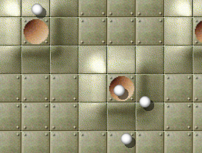

Это руководство описывает как установить и играть в Enigma. Оно соответствует версии Enigma под номером 1.20.
Copyright © 2003, 2004, 2005, 2006, 2007, 2008, 2009, 2010, 2011, 2012, 2013 Daniel Heck (dheck@gmx.de) и другие участники
Копирование и распространение этого файла с изменениями или без разрешено любым способом без отчислений, если сохранены уведомление об авторских правах и это уведомление.
| 1. Введение | Знакомство с Enigma | |
| 2. Игра | Как играть в Enigma | |
| 3. Некоторые игровые объекты | Описание некоторых игровых объектов | |
| 4. Дополнительные темы | Дополнительные возможности и администрирование | |
| 5. Спойлеры | Подсказки для некоторых сложных уровней | |
| 6. Благодарности | Создатели и благодарности | |
| 1.1 Об Enigma | Некоторые факты об Enigma | |
| 1.2 Установка | Получение и установка Enigma | |
| 1.3 Распространение Enigma | Передавайте копии вашим друзьям! |
Сказать, что Enigma ? игра-головоломка это преуменьшение. На самом деле Enigma это огромная коллекция головоломок, и каждый из ее 550 уникальных уровней снова и снова потребует сообразительности, ловкости и подлинной силы воли от своих игроков. Enigma проста в изучении, интересна в игре и сложна в овладении. Она может развлечь пользователей почти любого возраста. Она содержит сотни уровней. И, если этого не достаточно, она также полностью бесплатна. Если Вам нравятся игры-головоломки и у Вас твердая рука, Enigma возможно займет Вас на протяжении целых часов.
Цель игры ? найти и открыть пары ‘Oxyd’-камней одинакового цвета. Просто? Да. Легко? Конечно, нет! Скрытые ловушки, огромные лабиринты, лазерные лучи и, самое главное, бесчисленные причудливые головоломки обычно перекрывающие Вам прямой путь к Oxyd-камням. Игровые объекты Enigma (их здесь сотни, чтобы Вы не скучали) взаимодействуют многочисленными непредсказуемыми способами, и поскольку многие из них подчиняются законам физики (а точнее, особым законам физики Enigma), управление ими с помощью мыши не всегда тривиально ...
Первоначальная цель проекта Enigma была сохранить дух серии игр Oxyd, после того как их издатель решил покинуть игровой бизнес в 2002 году. У поклонников этой знаменитой игры будет чувство дежа вю. Но спустя годы, Enigma впитала идеи из множества других популярных игр и добавила свои уникальные особенности к каждой из них.
Enigma доступна для Windows, Mac OS X, и большинства разновидностей Linux и других современных Unix’ов. Она переведена на многие языки. Даже это руководство доступно на нескольких языках.
Существует официальная домашняя страница Enigma, которая содержит страницы скриншотов, загрузок, последних новостей и самую последнюю версию этого руководства. С разработчиками Enigma всегда можно связаться с помощью электронной почты по адресу enigma-devel@nongnu.org.
Enigma это свободное программное обеспечение, другими словами, приветствуется копировать ее и давать ее Вашим друзьям (смотрите (see section Распространение Enigma). Enigma разрабатывается маленькой группой добровольцев, все из нас работают в наше свободное время. Если Вам понравилась игра, пожалуйста пришлите нам электронное письмо. Это пожалуй единственная вещь, которая всегда приводит к тому, что мы посвящаем этой игре бесчисленное множество часов.
Последняя версия Enigma может быть загружена со страницы загрузок Enigma. Эта страница содержит пакеты для следующих операционных систем:
Версия Enigma для Windows распространяется, как самораспаковывающаяся программа. Просто скачайте и запустите предложенный файл ‘.exe’.
Существуют бинарные пакеты для некоторых популярных дистрибутивов Linux, таких как SUSE, Redhat или Debian. Для других Unix-подобных операционных систем обычно самое простое решение это сборка Enigma из исходных кодов.
Для операционной системы версии X установка не требуется, просто запустите файл ‘.dmg’ или ‘.tar.gz’.
Страница загрузок, как правило, содержит более подробную и современную информацию. Если Вы не можете заставить Enigma работать на Вашем компьютере, не бойтесь попросить помощи в рассылке Enigma (enigma-devel@nongnu.org).
Enigma это свободное программное обеспечение и она может распространяться на условиях GNU General Public License (GPL). Эта лицензия поставляется с каждым изданием Enigma (или в файле ‘COPYING’ или в файле ‘COPYING.txt’). Если Вы хотите только играть в Enigma, Вам не обязательно читать все те термины (скорее всего Вы и не захотите). Для Вас, лицензия в основном гласит: Играйте в Enigma сколько хотите, пока хотите и можете давать ее своим друзьям!
Если Вы хотите изменить Enigma или способствовать ее дальнейшей разработке, пожалуйста прочтите ицензию, всего один раз в жизни. Лицензия GPL гарантирует, что Enigma будет оставаться свободным программным обеспечением в будущем. В частности, если Вы изменяете Enigma или распространяете измененную версию, Вы не можете отнять ни у кого другого право использовать, изменять и распространять Enigma или производные от нее.
Предыдущие два абзаца не заменяют настоящую лицензию, но дают представление о ней в общих чертах на простом русском. Пожалуйста обратитесь к GPL, если Вы не определились или если Вам нужно знать больше подробностей.
| 2.1 Знакомство | Передвижение по меню и начало игры | |
| 2.2 Правила Игры | Как играть в Enigma | |
| 2.3 Управление | Команды клавиатуры и мыши |
После запуска Enigma, Вы окажетесь в главном меню, откуда Вы можете начать новую игру, установить некоторые параметры или выйти из игры, если Вам надоело. Следующие разделы познакомят Вас с меню уровней и меню настроек; все остальное можно надеятся говорит само за себя. Многие меню предоставляют интерактивную помощь; просто нажмите клавишу <F1>.
| 2.1.1 Меню уровней | Выбирает следующий уровень | |
| 2.1.2 Меню Пакет уровней | Выбирает пакет уровней | |
| 2.1.3 Настройки | Приспособьте Enigma под свои предпочтения | |
| 2.1.4 Инспектор уровня | Подробная информация об уровне |
Нажатие на "Начать игру" в главном меню приведет Вас к меню уровней, которое выглядит приблизительно как это:

Экран состоит из трех областей: верхняя область содержит информацию о выбранном в данный момент уровне и текущем пакете уровней, средняя область показывает вид доступных уровней, а внизу находится ряд кнопок.
Вы можете передвигаться по списку уровней или используя маленькие кнопки со стрелками справа, или пользуясь клавишами со стрелками. Для начала новой игры просто кликните на изображении местности на которой Вы хотите играть или нажмите <Enter>.
В Enigma есть два уровня сложности: "простой" и "нормальный". Чтобы переключиться между простой и нормальной сложностью, нажмите кнопку в центре ряда кнопок: переключитесь на значок с изображением серебрянной медали и пера, если Вы предпочитаете уровни полегче или с изображением золотой медали для нормального, более сложного, режима игры.
В упрощенной версии доступны не все уровни; поэтому они обозначены пером (если Вы еще их не решили) или серебрянной медалью в верхнем левом углу их изображения.
Вы можете перейти на следующий уровень нажав или <F5>, или кнопку <>>|> в нижнем ряду. Значение слова "следующий" в предыдущем предложении зависит от режима, который Вы выбрали самой левой кнопкой в нижнем ряду.
Уровень может дополнительно обозначаться маленьким красным треугольником с восклицательным знаком в верхнем левом углу. Этот знак уведомит Вас, если уровень был обновлен после того как Вы его решили. Вы сможете увидеть его только, если Вы обновите Enigma до более новой версии.
Вы можете перемещаться по меню уровней с помощью следующих клавиш:
Вернуться к предыдущему меню
Показать помощь
Перейти к следующему уровню, аналогично кнопке <>>|>
Сменить уровень
Играть на выбранном уровне
Перейти к следующему пакету уровней
Перейти к предыдущему пакету уровней
С Enigma поставляется много уровней. На самом деле, много-много уровней. Чтобы сохранить порядок, они входят в "пакеты уровней". А из-за того, что каждый релиз Enigma добавляет больше уровней, мы даже собрали пакеты уровней в "группы". К счастью, все это значительно проще чем звучит.
Чтобы выбрать пакет уровней, войдите в меню "Пакет уровней", которое доступно из главного меню или из меню уровней.
Это меню показывает группы в левой колонке, а пакеты уровней выбранной группы в другой колонке справа. Официальными группами, которые поставляются вместе с Enigma являются следующие:
Щелчок левой кнопки мыши выбирает группу или пакет уровней.
Описание дополнительных возможностей пакетов уровней смотрите в Пользовательские пакеты уровней.
Меню настроек позволяет Вам приспособить Enigma под Ваши предпочтения.
Выберите язык для меню и (если доступно) внутриигровых документов.
Переключает между полноэкранным и оконным режимами экрана. Вы также можете использовать Alt-<Enter>, чтобы сделать это, даже когда Вы не в меню настроек. Примечание: На некоторых системах Вы должны вернуться в главное меню, чтобы переключиться из оконного в полноэкранный режим или наоборот.
Эта кнопка позволяет Вам изменить видеорежим, используемый Enigma. Enigma не переключает видеорежим немедленно, а ждет пока Вы вернетесь в главное меню.
Если необходимо, настройте здесь яркость экрана.
Определяет насколько быстро Ваш шарик ускоряется, когда Вы двигаете мышью. Вы можете использовать клавиши-курсоры влево и вправо, чтобы изменить скорость мыши во время игры.
Громкость звуковых эффектов в игре.
Эта кнопка предоставляет Вам выбор набора звуковых эффектов Enigma, используемых во время игры. Если Вы используете Enigma с оригинальными файлами данных Oxyd, эта опция позволит Вам использовать оригинальные звуки на всех уровнях.
Громкость фоновой музыки в меню.
Переключает между "обычным" стерео, "обратным" стерео и моно звуками.
Если установлено в ‘Авто’, Enigma время от времени будет пытаться скачать новые данные о рейтинге. Это обновит общедоступные рейтинги, мировые рекорды, очки соответствия и т.п. Смотрите See section Регистрация очков.
Введите Ваше имя или ник, которые Вы хотите присоединить к вашим рекордам, при отсылке файла enigma.scores. Смотрите See section Регистрация очков.
Путь к месту, в котором Enigma хранит все Ваши пользовательские данные. Обратитесь к справочному руководству за подробной информации.
Путь к месту, в котором Enigma хранит все Ваши пользовательские эскизы. Обратитесь к справочному руководству за подробной информацией.
Чтобы увидеть более подробную информацию об уровне, Вы можете вызвать инспектора уровня. Нажмите или просто правую кнопку мыши, или нажмите левую кнопку вместе с клавишей <Ctrl> на изображении уровня в меню уровней.
Вы можете сравнить Ваши очки с мировыми рекордами, очками соответствия, очками автора уровня. Предусмотрены даже некоторые данные, о том сколько игроков решили уровень.
Кроме прочей информации, детальное описание которой есть в справочном руководстве, Вы можете ввести небольшое примечание к уровню и оценить уровень.
Пожалуйста имейте ввиду, что поле для ввода примечания может позволить Вам ввести только символы ASCII в зависимости от системы с которой работает Enigma.
Рейтинг это ваше личное впечатление от уровня. ‘-’ означает отсутствие мнения. 0 - очень плохой, 5 - посредственный, 10 - самый лучший. Рейтинг будет отослан вместе с Вашими очками (смотрите (see section Регистрация очков).
Последнее, но не менее значимое - Вы можете использовать инспектор уровня, чтобы посмотреть снимки экрана, которые Вы сделали во время игры (смотрите (see section Управление).
| 2.2.1 Обычные местности | ||
| 2.2.2 Местности для двух игроков | ||
| 2.2.3 Местности для медитации |
Основная идея Enigma проста: В большинстве уровней Вы управляете маленьким черным шариком, ищете и "открываете" совпадающие пары так называемых Oxyd-камней. Закрытые Oxyd-камни выглядят как эти (существует четыре различных варианта, но все они действуют одинаково):

Когда Вы касаетесь Вашим шариком Oxyd-камня, он открывается и показывает обозначение цвета. На любой местности есть два Oxyd-камня с одинаковым обозначением. Вы должны дотронуться до двух соответствующих камней подряд, чтобы открыть их навсегда—если символы не одинаковы, первый Oxyd-камень снова закроется. Чтобы завершить местность Вам нужно найти и открыть все пары Oxyd-камней. На следующем изображении Вы видите пару зеленых Oxyd-камней, которые уже открыты. Знак вопроса внутри синего Oxyd-камня означает, что второй синий символ остается спрятанным.

Между прочим: если Вы еще не сделали этого, сейчас самое время запустить Enigma и поиграть на первых уровнях!
Вы можете поднимать с пола объекты передвигаясь по ним. Инвентарь внизу экрана показывает список предметов в вашем распоряжении. В начале новой игры у Вас не будет ничего, кроме двух запасных шариков. Следующее изображение показывает инвентарь, содержащий лопату, клочок бумаги, два бруска динамита, Ваши дополнительные жизни и зонт:

Самый левый объект может быть активирован нажатием левой кнопки мыши: он будет или брошен на пол, или выполнит какое-то действие. Динамит, например, загорится, когда Вы бросите его, а пружина подбросит Ваш шар. Нажмите правую кнопку мыши или используйте колесо мыши, чтобы чередовать предметы в инвентаре.
Если, по какой-то причине, Вы не хотите поднимать предметы, зажмите любую кнопку мыши, когда передвигаетесь. В некоторых ситуациях это может Вам пригодится.
Многие камни могут перемещаться, если достаточно сильно их толкнуть. Один из самых полезных камней ? деревянный ящик, который используется для строительства мостов через воду и бездну. Это изображение показывает как строить мост, сбрасывая деревянные ящики в воду:

Игровые объекты взаимодействуют друг с другом удивительными способами: объекты лежащие на полу, например, могут быть преобразованы, с использованием лазерных лучей и подвижных камней. А многие камни изменяются, если Вы коснетесь их различными объектами из первого слота Вашего инвентаря (волшебная палочка-?-самый известный объект в этой категории).
Последнее, но не менее значимое: Не впадайте в уныние от видимой запутанности игры—поведение большинства объектов в свое время станет ясным. Некоторые неясные объекты описаны в Некоторые игровые объекты.
Сначала немного о плохом: Enigma еще не поддерживает Интернет или сетевую игру. Поэтому, местности для двух игроков в действительности однопользовательские, где Вы можете переключаться между двумя шарами: черным, которым Вы уже пользовались и дополнительным белым шаром:

На то, что Вы на уровне для двух игроков указывает маленький символ Инь-Янь в Вашем инвентаре. Активация этого объекта переключает управление с черного на белый шар и наоборот.
В так называемых местностях для медитации Ваша задача совершенно другая: в отличие от нахождения совпадающих Oxyd-камней, Вам нужно положить все маленькие белые шарики в лунки в полу. Уровень завершится, как только каждый шарик остановится в своей собственной лунке.
Однако будьте осторожны: Все шарики передвигаются вместе и поспешное движение мышью может легко вытолкнуть некоторые из них из своих лунок. Местности для медитации, как правило, требуют очень твердой руки и уйму терпения (между прочим, именно поэтому они называются местностями для медитации!).
Здесь перечислено управление во время игры. (Вы не обязаны запоминать его прямо сейчас?-Вы всегда можете отобразить этот список во время игры, нажав клавишу <F1>.)
Использовать первый предмет в инвентаре
Чередовать предметы инвентаря
Показать игровое меню
Показать экран помощи
Уничтожить текущий шар
Перезапустить текущий уровень
Перейти к следующему уровню
Перейти к следующему нерешенному уровню
Сделать снимок экрана
Уменьшить скорость мыши
Увеличить скорость мыши
Переключиться между полноэкранным и оконным режимом (не на всех системах работает незамедлительно)
Немедленно вернуться к меню уровней
Существуют дюжины различных игровых объектов, которые Вы увидите на уровнях Enigma. Мы хотим описать здесь только небольшой классифицированный набор этих объектов. Если Вы новенький в Enigma, возможно Вы захотите начать с уровней из пакета учебника? Просто запустите Enigma, выберите "Пакет уровней", потом кнопку "Enigma" в верхнем левом углу, потом "Tutorial" справа. Начните с первого уровня "Oxyd Stones 1". Учебник покажет Вам самые важные объекты и идеи, и некоторые из простейших уровней Enigma.
| 3.1 Предметы | ||
| 3.2 Камни |
| 3.1.1 Взрывчатка | Динамит и бомбы | |
| 3.1.2 Зонты | ||
| 3.1.3 Флаги | Установка точки восстановления |

Существует три типа взрывчатки, которые Вы можете найти повсюду в Enigma. Самый безобидный это палочка динамита. Она наносит не такой большой урон поверхности или соседним камням, когда взрывается, но она полезна для разрушения определенных камней и для поджигания соседних бомб.
Черные бомбы достаточно мощные, чтобы разрушить большинство поверхностей и многие другие объекты. Для большинства целей они–выбор для разрушения. У белых бомб сила разрушения пяти черных бомб, убегайте скорее, когда увидите их горящими!

Используйте зонты, чтобы сделать Ваш шар неуязвимым на небольшой момент времени (десять секунд, если быть точным). Когда Вы активируете зонт, вокруг вашего шара появится белый ореол на время действия защиты. Если ореол начал мигать, у Вас есть три секунды, чтобы переместить Ваш шар в безопасное место.

Флаги в основном используются в длительных и опасных путешествиях. Если Ваш шар разрушился, новый шар появится на том месте, где Вы в последний раз установили флаг, вместо того чтобы появиться в начале уровня. Есть два типа флагов: черный и белый, которые устанавливают начальные точки соответственно черного и белого шаров.
| 3.2.1 Смертоносные камни | ||
| 3.2.2 Обменные камни | ||
| 3.2.3 Зеркала | ||
| 3.2.4 Односторонние камни | ||
| 3.2.5 Сегун-камни | ||
| 3.2.6 Болдеры | ||
| 3.2.7 Камни-мозаики | ||
| 3.2.8 Почтовые камни |
Существует два вида камней, которых Вы должны избегать во что бы то ни стало, только если у Вас нет зонта, чтобы защитить Ваш драгоценный шарик.
Камень с изображением черепа так же опасен, как и выглядит; дотроньтесь до него и погибнете. На самом деле Вы предупреждены. Существуют даже более хитрые варианты, которые невидимы; не забудьте Ваши магические очки.
Черный рыцарь часто охраняет важные проходы, и в основном он не в настроении пропускать Вас. Предъявите хороший аргумент, чтобы "убедить" его.

Обменные камни, будучи ударенными, не просто перемещаются на смежный (пустой) участок; вместо этого, они меняются местами с камнем который они ударили. Следовательно, единственный способ переместить обменный камень из одного места в другое—неоднократно менять его с другими "обычными" камнями.

Лазерные лучи могут преломляться с помощью зеркальных камней. В Enigma существует два типа зеркальных камней: плоские зеркала и треугольные зеркала. Плоское зеркало ведет себя как обычное зеркало: входящий лазерный луч отражается, если он перпендикулярен зеркалу и отклоняется влево или вправо, если он падает на зеркало под углом в 45 градусов.
Треугольные зеркала немного сложнее: три стороны ведут себя как обычные зеркала, отражая и отклоняя входящий луч. Но луч, который падает на вершину треугольника разделяется на два исходящих луча, которые движутся в противоположных направлениях.
Оба типа зеркал дополнительно могут быть полупрозрачными или перемещаемыми. Полупрозрачные зеркала преломляют часть входящего луча, как их непрозрачные братья, но часть луча проходит неизменной. Перемещаемые зеркала смонтированы на светло-серые камни, неподвижные на темно-серые камни.
Вы можете поворачивать зеркала, слегка дотрагиваясь до них своим шаром. Но будьте осторожны с зеркалами, на которые уже падает лазерный луч, довольно просто неумышленно уничтожить Ваш шар!

Через эти камни можно пройти только в одном направлении. Из них могут быть построены целые лабиринты, но в основном они вынуждают Вас закончить одну часть уровня, перед прохождением следующей.
У Вас проблемы с односторонним камнем, который преграждает Вам путь? Может быть волшебный предмет сможет Вам помочь ...

В некоторых уровнях Вы можете встретить мигающие синие точки на поверхности. Они могут быть активированы правильной комбинацией сегун-камней, тогда они обычно сделают что-то полезное, наподобие открытия дверей или создания мостов.
Маленькая мигающая точка активируется перемещением на нее сегун-камня с маленьким отверстием. Чтобы активировать большие точки, одного сегун-камня недостаточно. Вместо этого Вам нужно правильно сложить два или три сегун-камня, вталкивая камни с маленькими отверстием в камни с большими отверстиями. Например, если Вы хотите активировать точку среднего размера, Вам нужно сначала разместить на ней сегун-камень с отверстием средних размеров, а потом втолкнуть камень с малым отверстием в тот, что больше.
Болдеры движутся в направлении, показанном на них стрелкой, пока не столкнутся с другим камнем. Возможно они блокируют Вам путь и Вам надо освободить их тем или иным способом. Но никогда, никогда не становитесь перед ними, так как Ваш шар мгновенно разобьется, когда болдер пройдет по нему!
Однако, Вы также можете использовать их, так как они способны открывать Oxyd-камни, когда столкнутся с ними. Вы можете перенаправить целенаправленные камни несколькими способами ...

Камни-мозаики получили свое имя из-за того, что отдельные камни могут быть соединены вместе, как кусочки мозаики. У камней-мозаик есть разъемы на некоторых или на всех сторонах, которые могут прикрепляться к разъемам смежных камней. Как только они будут соединены, группы камней-мозаик перемещаются как единое целое. Вы можете использовать эти блоки, например, чтобы строить мосты через воду или бездну.
Когда их коснется волшебная палочка, камни-мозаики отреагируют по разному. Если блок камней-мозаик соединен окончательно (другими словами у него нет свободных разъемов), блок немедленно начнет взрываться, камень за камнем. Если блок соединен не до конца, камни в ряду или колонке, до которой дотронулись сместятся на одно место по горизонтали или по вертикали.
Существует редкий вариант обычных камней-мозаик, который ведет себя немного по другому. Основная его среда обитания это уровни Oxyd 1, а узнать его можно по цвету труб, оранжевому вместо синего. Эти камни-мозаики не могут перемещаться как единое целое. Они ведут себя как синие камни-мозаики, когда Вы дотрагиваетесь до них волшебной палочкой: блок взрывается, если он полностью соединен или ряд или колонка блока, до которой дотронулись смещается.

Почтовые камни могут использоваться для пересылки предметов из Вашего инвентаря в некое недоступное место на поверхности. Когда Вы дотрагиваясь используете почтовый камень, первый объект в Вашем инвентаре изымается и ложится в конце канала связи, присоединенного к почтовому камню. В большинстве случаев, Вы должны сами построить этот канал, например, "пересылая" отдельные части канала.
Будьте осторожны: почтовый камень не работает, если на конце канала связи уже есть объект. Очень легко неумышленно переслать объект, который впоследствии заблокирует канал, поэтому будьте осторожны!
| 4.1 Пользовательские пакеты уровней | История, Результаты поиска и Авто | |
| 4.2 Резервное копирование | Что копировать для безопасности | |
| 4.3 Регистрация очков | Позвольте миру узнать о Вашем успехе | |
| 4.4 Обновление Enigma | Сохранение очков и уровней при обновлении |
Меню Пакет уровней предлагает некоторые дополнительные возможности. В группе ‘User’ есть три пакета уровней, которые изначально пусты: ‘Auto Folder’, ‘History’ и ‘Search Result’.
Кликая на кнопке ‘Поиск’ в меню пакетов уровней Вы можете искать среди совокупности уровней. Просто переместите мышь к текстовому полю и введите строку для поиска. Вы можете искать по автору, названию и имени файла. Поиск не восприимчив к регистру. Например, Вы можете искать строку "jump". Полученные уровни будут представлены в пакете уровней под названием "Search Results".
Пакет уровней ‘History’ обновляется автоматически с каждым уровнем на котором Вы играли. Это может пригодиться, если Вы ищете уровень, на котором играли на последней неделе, но не знаете ключевых слов для поиска.
‘Auto Folder’ это пакет уровней, который Вы можете использовать, чтобы добавить новые уровни, например уровни, которые Вы скачали из Интернета или написали сами. Папка, в которой Вы должны хранить уровни—‘levels/auto’ в директории, которая указана в строке ‘Папка пользователя’ в Настройки. Когда Enigma запускается, уровни в этой папке находятся и загружаются автоматически.
Enigma предлагает намного больше возможностей, выходящих за пределы этого руководства. Чтобы узнать подробности, пожалуйста прочтите справочное руководство.
Если Вы боитесь потерять все Ваши очки, в результате отказа жесткого диска, или если Вы хотите переместить Ваши очки с одного компьютера на другой, полезно знать, как зарезервировать информацию о состоянии Enigma. Чтобы сделать это, сначала найдите в Настройки Enigma ‘Папку пользователя’. Вы можете просто сделать резервную копию той папки —важными являются файлы ‘enigma.score’ и ‘state.xml’.
Для регистрации Ваших очков, Вам нужно отправить нам файл ‘enigma.score’, расположенный в директории ‘Папка пользователя’. Пожалуйста ищите более подробные указания на домашней странице проекта.
Чтобы автоматически скачивать списки обновленных мировых рекордов, Вам просто нужно включить опцию ‘Обновлять рейтинг’.
Если Вы не настраивали Вашу старую версию, просто удалите старую версию и установите новую. Это все, что Вы должны сделать, так как Ваши очки автоматически обновятся.
Если Вам понадобится добавить уровни в директории установки Enigma, Вам нужно сделать их резервную копию перед удалением. После этого Вы можете без опасений удалить старую версию и установить новую.
Старый файл очков ‘~/.enigmarc2’ для систем с переменной окружения ‘HOME’ или ‘.../Application Data/enigmarc.lua2’ для лишенных "HOME" систем Windows автоматически преобразуется в новый формат. Вы можете удалить старые очки после первого успешного запуска Enigma 1.00.
Если Вы хотите играть на уровнях, которые Вы сохранили со старой установки, пожалуйста прочтите справочное руководство.
Этот раздел содержит подсказки для некоторых сложных уровней. Настоятельно не рекомендуется читать спойлеры, если Вы не застряли окончательно. Некоторые уровни намеренно усложнены и даже игрокам-ветеранам Enigma нужны часы, чтобы решить их. Некоторые уровни легче решить в упрощенном режиме игры (смотрите (see section Меню уровней).
| 5.1 Прохождение Advanced Tutorial | ||
| 5.2 Советы для нескольких уровней |
Считается, что местности в пакете уровней "Tutorial" просты. Кроме последней, которая не так проста ... Этот раздел руководства предоставлен Jacob Scott.
Это прохождение моего уровня "Advanced Tutorial" в пакете уровней "Tutorial" (чтобы менять пакеты уровней, кликните на "Пакет уровней" внизу-слева экрана и выберите пакет уровней). Во время игры в первую очередь, Вам нужно читать все документы в комнате.
Конечная цель этого уровня, как и большинства уровней Enigma, найти и дотронуться до всех "Oxyd-камней" своим черным шариком. Когда Вы касаетесь Oxyd-камня, он открывается и показывает цвет. Если Вы дотронетесь по очереди до двух Oxyd-камней одинакового цвета, они оба останутся открытыми. Вы завершите уровень, как только подберете все пары Oxyd-камней на уровне.
В уровне около двадцати комнат, собранных в три отдельных области. В первой области Вы встретите некоторые основные типы блоков и поверхностей, которые встречаются в Enigma и решите пару простых головоломок. Вторая область сложнее и познакомит Вас с полезными приемами обмана активного врага. Третья и последняя область даст Вам поэкспериментировать с продвинутым взаимодействием между объектами Enigma. В этом отдельном уровне, всевозможные камни могут быть найдены в одной комнате в конце третьей области.
Вы начинаете в комнате окруженной неподвижными стенами, кроме прохода справа, воды внизу-слева и закрытого прохода вверху-справа.
Комната 1: Идите через проход в стене справа.
Комната 2: Просто избегайте блоков с изображенным на них черепом.
Комната 3: Столкните четыре деревянных ящика в воду в ряд, чтобы создать мост на противоположный берег. Теперь толкните черноватые блоки справа. Передвиньте блоки из коры с пути (возможно влево) и постройте мост справа из деревянных ящиков.
Комната 4: Подойдите поближе к волчку. Когда он погонится за Вами, ведите его влево и вокруг блоков в центре комнаты. Как только волчок будет далеко от перехода на следующий уровень, проскочите туда.
Комната 5: Единственная опасность здесь—черепа внизу комнаты. Первый тип поверхности это металл—эта поверхность похожа на "лиственную", по которой Вы передвигались ранее. Следующая поверхность "красная"—на этой поверхности сложно замедлиться или ускориться. Третий тип это лед—на этой поверхности слабое трение. Последний тип поверхности это космос—здесь вообще нет трения; вы не можете изменить вектор скорости (скорость и направление), когда Вы находитесь на этой поверхности.
Комната 6: Просто идите по склонам. Потом выйдите влево, пройдя по "обратной" поверхности—когда на этой поверхности Вы направляете мышь (или похожий контроллер) в одном направлении, шар ускоряется в обратном (если у Вас с этим проблемы, попробуйте повернуть Вашу мышь на 180 градусов).
Комната 7: Попытайтесь получить дополнительный шар, поставив подвижный блок на нижний переключатель. Сначала толкните его на один квадрат вверх, потом влево на шесть квадратов. Потом толкните его на пять квадратов вниз и два вправо. В конце концов толкните его на один квадрат вверх и один влево. Возьмите дополнительный шар и затем поставьте блок на другой переключатель, чтобы открыть проход слева от комнаты.
Комната 8: Возьмите динамит (Вам нужно будет зайти на лед) и бросьте его напротив желтых блоков, чтобы взорвать их и пройти. Лопата не обязательна, но останьтесь поэкспериментировать с ней.
Комната 9: Толкните самый нижний подвижный блок влево. Сейчас болдеры, пытающиеся пройти вправо, преграждают Вам путь. Толкните самый правый подвижный блок (влево или вправо), чтобы дать сползти болдерам. Возьмите волшебную палочку (не дотрагивайтесь случайно ни до каких подвижных блоков, когда волшебная палочка находится в начале Вашего инвентаря) и толкните подвижный блок над водой вниз. Теперь вернитесь в правую часть комнаты, выставьте волшебную палочку в начало Вашего инвентаря и коснитесь трех верхних болдеров из длинного столбца (постарайтесь не попадаться на пути любых болдеров). Толкните самый левый подвижный блок влево и идите в следующую комнату.
Комната 10: Коснитесь переключателя. Теперь толкните два блока из коры вверх (на один квадрат каждый). Толкните средний (сверху вниз) деревянный ящик влево, а деревянный ящик, справа-сверху от него в воду. Столкните оставшиеся ящики в воду, чтобы образовать столбец (постарайтесь не утонуть). Теперь ударьте окно (голубую полосу) на большой скорости. Возьмите шар и перейдите через мост в первую комнату. Отсюда идите в открывшийся проход.
Во второй области Вы встретите ротор, являющийся активным противником Вашего черного шара. Различные роторы могут действовать несколько различно, но они всегда непонятливы. Предназначение последнего—заставить его сделать, то что Вам нужно, держась на безопасном расстоянии.
Осмотритесь в этой области (но пока не трогайте подвижный блок). Вам нужно пройти через трое закрытых ворот в верху этой области.
Первые ворота: Толкните белый шар влево (не пройдите случайно через черный односторонний блок) чтобы освободить его (это может потребовать нескольких попыток). Возьмите ложку и довольно сильно толкните белый шар через белый односторонний блок, чтобы он не остановился. Теперь идите через черный односторонний блок и проведите белый шар через проход. Довольно сильно толкните белый шар через следующий белый односторонний блок, чтобы он не остановился ниже. Как только белый шар пройдет, используйте ложку; Вы вновь начнете уровень в начале и больше ничего не случится. Снова пройдите через ворота—первые ворота вверху комнаты открыты.
Вторые ворота: Толкните подвижный блок в самой правой комнате этой области вправо и бегите. В воротах, соединяющих вторую и третью область, появится документ с полезной информацией. Подведите ротор (заставляя его гнаться за Вами, как Вы делали это с волчком) к низу стены справа от ворот между первой и второй областями. Пройдите через ворота и через мост в комнату под Вами. Коснитесь переключателя, чтобы закрыть ворота и вернитесь в комнату откуда Вы начали. Вы больше не видите ротор—его не будет в той комнате, где и Вы—но если присмотреться, Вы сможете увидеть где он. Цель здесь состоит в том, чтобы не подвергая себя опасности, заставить ротор пойти к переключателю и открыть для Вас дверь. Пусть ротор пойдет за Вами из верхнего-правого угла этой комнаты в верхний-левый. Он должен быть вытолкнут влево несколькими наклонами. Доведите ротор вниз слева, пока он не продолжит свой путь и Вы не услышите звук нажатого переключателя. Коснитесь переключателя, чтобы открыть ворота и вернуться во вторую область ? вторые ворота, должны быть открыты.
Третьи ворота: Просто толкните подвижный блок, из которого выскочил ротор, на переключатель в комнате, где он появился. Вернитесь в комнату слева от Вас—третьи ворота должны быть открыты. Идите через трое отрытых ворот.
В третьей области Вам нужно исследовать взаимодействия между различными объектами Enigma. Здесь Вы найдете лазеры, зеркала и монеты. Вам прийдется решить простую головоломку лазер-и-зеркало, чтобы дать лазеру попасть в отдельный камень, который откроет мост в следующую комнату. Чтобы преодолеть следующие несколько комнат, Вы должны создать несколько новых объектов, прожигая лазерным лучом существующие объекты.
В первой части этой области есть три зеркала и лазер с переключателем.
Комната 1: Вам нужно дать лазеру попасть в черный камень. Толкните нижнее-левое зеркало на один квадрат вниз и поверните его так, чтобы оно выглядело наподобие "\" легко дотрагиваясь до него (влево вплоть до лазера должно быть тридцать квадратов). Толкните верхнее-левое зеркало на восемь квадратов влево, на один квадрат вниз и поверните его, чтобы оно было похоже на "/" (оно должно быть в четырех квадратах от предыдущего зеркала и прямо над ним). Толкните верхнее-правое зеркало на два квадрата вверх, а затем на три квадрата вправо (оно должно быть правее на двадцать два квадрата от предыдущего зеркала и на один квадрат ниже черного камня). Расположите это зеркало в виде "/". Теперь дотроньтесь до переключателя, чтобы включить лазер (не попадите под него или не проходите через лазерный луч). Как только это будет сделано, идите через мост справа от Вас.
Комната 2: Возьмите несколько монет и возвращайтесь в предыдущую комнату. Выключив и включив лазер, поразите лазерным лучом одну из монет. Возьмите полученный объект (зонт), повторите процесс и возьмите второй зонт. Теперь бросьте одну из монет за зеркалом и сдвиньте на нее зеркало. Поразите эту монету со значением пять лазером, чтобы создать молот. Поразите лазером молот (выключив и включив лазер), чтобы создать меч. Если Вы хотите несколько дополнительных шаров, Вы можете перетащить зеркало над монетой дважды и поразить лазером монету с увеличенным значением (самое большее, до десяти). Чтобы вернуться в комнату с рыцарями, поставьте зеркала в их начальные позиции, уберите все объекты, блокирующие лазер и коснитесь переключателя. Теперь используя правую кнопку мыши или клавишу "Tab" выставьте в начало (слева) своего инвентаря меч. Ударьте несколько рыцарей (каждого по четыре раза), чтобы пройти.
Комната 3: Используйте зонт и проследуйте над бездной в комнату под Вами, а затем в комнату справа от Вас. Если окружающее Вас кольцо начнет мигать, используйте другой зонт.
Комната 4: Просто подберите пары Oxyd-камней дотрагиваясь до Oxyd-камней одинакового цвета с активированными Oxyd-камнями (по одному за раз). Не трогайте грубые камни (черные камни). Вы выиграли!
Сообщение вблизи верхнего-правого угла содержит важный совет.
Поставьте первый сегун-камень в верхний левый угол, а второй над самой правой сегун-точкой.
Используйте деревянные ящики, чтобы не заблудиться.
Всегда ли Вы считаете, что Ваша мышь перевернута???
Помните? Это первый уровень оригинального Сокобана … Он ведь не такой трудный!
Поставьте два зеркала вверху и одно внизу. Перемещая зеркала и точно целясь, Вы можете попасть лазерным лучом по всем Oxyd-камням.
Одна из синих точек ведет себя по-разному. Воспользуйтесь этим!
Расположите шарики горизонтально.
Постучитесь в стены.
Вы открыли все двери и все равно не можете пройти? Вы что-то пропустили!
Слышали когда-нибудь о проблеме трех тел?
Обратитесь к "Easy Shifting ...".
Обратитесь к “Running Rings”.
Первое—найдите дискету и волшебную палочку, они Вам понадобятся. Второе—всегда носите дискету и волшебную палочку с собой. Третье—некоторые камни похожи, но действуют не одинаково.
Зажмите лазер.
Время узнать несколько вещей о преобразовании объектов. Экспериментируйте!
Или скорее: Вопрос начала???
Сначала найдите волшебную палочку!
Прячьте опасные инструменты от детей.
Осторожно продвигайтесь к успеху.
Есть ли здесь подобие?
... или воспользуйтесь Вашей любимой энциклопедией, если Вы не можете точно вспомнить число.
Сообщение в левой комнате расскажет Вам, как расположить блоки в первой строке переключателей. После этого, используйте коды цветов, показанных в левой комнате.
Будьте признательны!
Не можете выбраться из первого экрана? Сконцентрируйтесь сначала на мигающей точке. Не можете найти последний Oxyd-камень? Активируйте три из больших мигающих точек на первом экране и маленький на третьем экране.
Боитесь умереть?
Одна перестановка вверх – Одна перестановка вниз – Головоломка вправо – Продолжите дальше!
Три маленьких эскимоса – Связанные в кольцо на ледяном поле – Не могут найти их маленькие иглу – Скрытые под снежным покровом.
Вы не можете решить этот уровень без потери своего "Я".
Ловушки по всей территории … это местность для медитации.
Есть пружина, спрятанная за зеркалом.
С молотком проще!
Осторожное затопление определенных областей может пригодиться. Не покидайте первую комнату без активации нижнего переключателя. Многие из всех нижних переключателей действуют одинаково.
Зажмите лазеры, если Вы не достаточно быстры.
Проберитесь в банк, через трещины в полу.
Обратитесь к “Pharao’s Tomb”.
Некоторые люди выпрыгивают из окна при пожаре – поступите иначе.
Слишком много деревянных ящиков? Как бы Вам убрать один?
Пушечное ядро тоже открывает Oxyd-камни.
Переключатель вредит Вам? Уничтожьте его!
Это выполняется.
Найдите способ уничтожения.
Не напоминает ли Вам о чем-то ЗСЮВ?
Принято считать, что этот уровень—зло. Существует источник, спрятанный возле Вашего начального положения.
Этот уровень хитрый. Подожгите бомбу возле деревянных ящиков.
Не хватает пиратов, чтобы покорить этот уровень? Есть другой, более простой путь.
Начните анализ с сотни.
Толкай и беги.
Когда Вы видите пересечение, что должно быть в следующем ряду?
Где-то в этом руководстве есть совет получше.
Под камнем спрятан лучший совет.
Пол горит быстрее.
Не позволяйте ничему дотрагиваться до границ.
Лазер изменяет не только предметы.
Принесите жертву вулкану.
Играйте до поры до времени.
Взорвите угол.
Подорвите взрывающиеся камни.
Удостоверьтесь, что у Вас всегда есть доступ к комнате с переключателем на полу. Потом ищите второй экран со "спрятанными сокровищами".
| 6.1 Главные разработчики | ||
| 6.2 Особые благодарности | ||
| 6.3 Помощники | ||
| 6.4 Используемое программное обеспечение |
Руководство уровнями и дизайн, бесценные дополнения по всем вопросам
Дизайн уровней, графика
Дизайн уровней, графика, программирование
Главный разработчик, графика, документация
XML, графический интерфейс, программирование основной части, документация
Программирование, руководство уровнями, дизайн уровней, документация
Дизайн уровней, программирование
Дизайн уровней
Дизайн уровней
Дизайн уровней и специальные знания Oxyd
Программирование, дизайн уровней
Портирование на Mac OS X, немного программирования, графика
Forum mag-heut.net administration, Level design
Graphics second generation
Переработка формата файла Oxyd, Oxydlib
Оригинальная идея игры–Спасибо!
Пакеты для Debian/Ubuntu
Музыка в меню (Pentagonal Dreams)
Много уровней для Сокобана с сайта http://users.bentonrea.com/~sasquatch/sokoban
Music second generation, Proof reading
Наша признательность различным меньшим помощникам:
This document was generated by raoul on March 29, 2013 using texi2html 1.82.